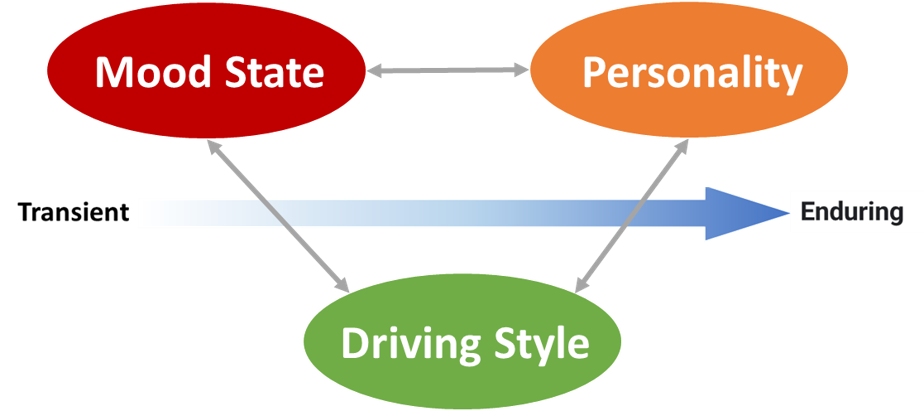
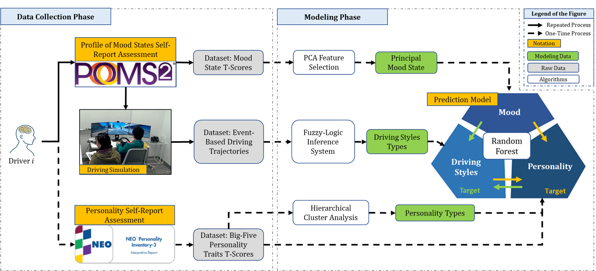
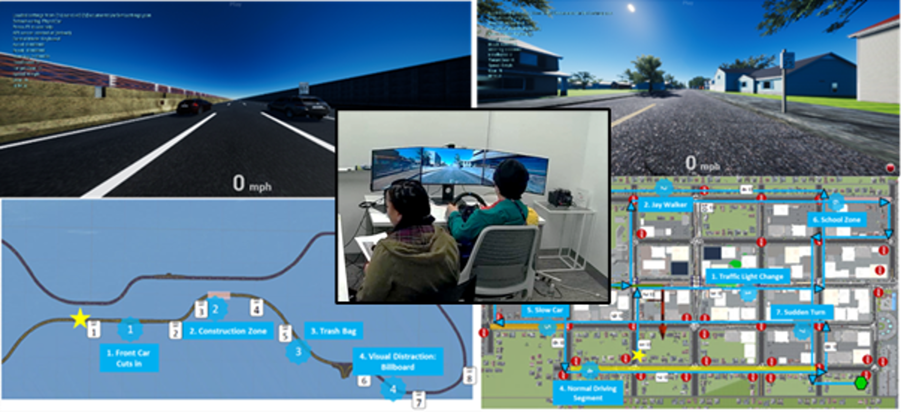
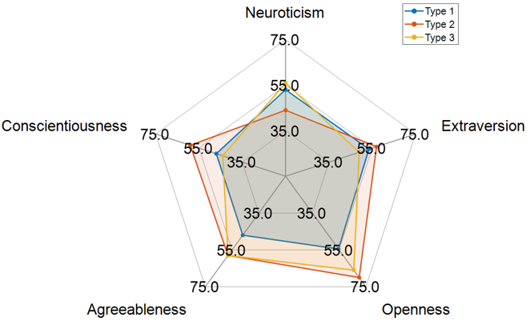
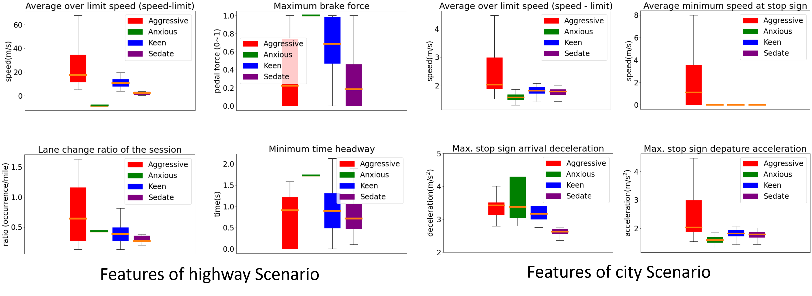
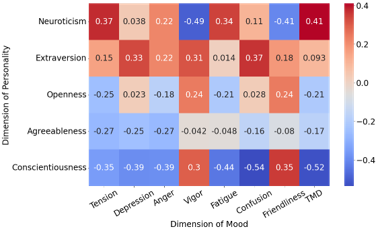
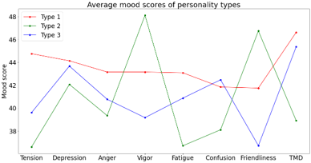

Driver Profile: Personality, Mood, and Driving Style
Introduction
This study examines relationships among driving style, personality traits, and mood states. It combines recorded driving behavior with survey responses from 28 licensed male drivers aged 21 to 40.
A fuzzy logic inference system identifies driving styles, while clustering and random forest models relate those styles to personality and mood measures.

Framework

Results & Visualizations




